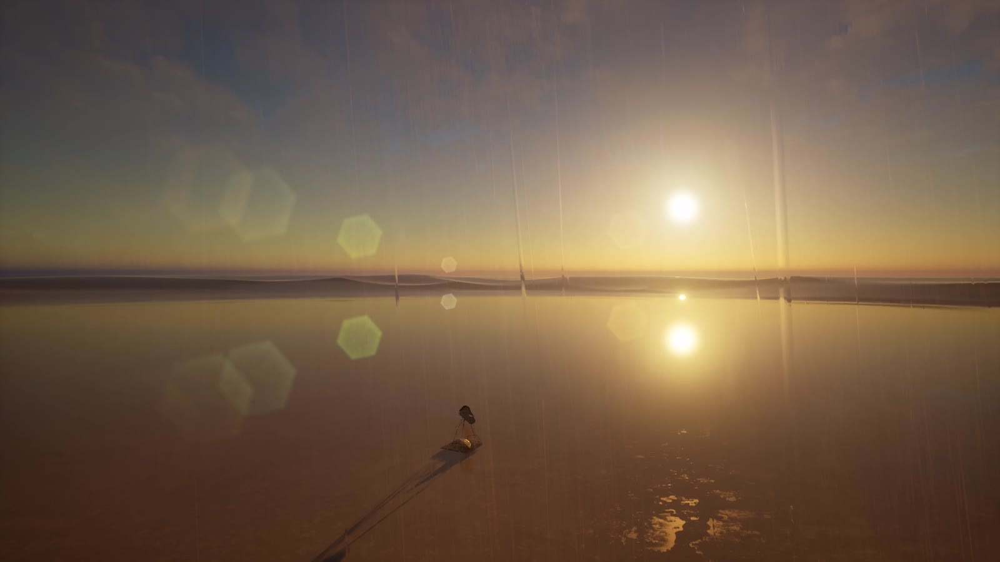

作品いろいろ
もう実際に立ってる作品と、映像で先に見せてから
あなたの場所に合わせてつくる作品。どっちもあり。


CG → リアル
まず映像で「ここに置いたらこうなる」を見せる。
OKが出たら、その通りに鉄でつくる。うそじゃないよ。



展示の写真
ギャラリーに、屋外に、美術館の入口に。タップで大きく見られます。


暮らしの鉄
かける、すわる、しまう。毎日つかえるアート。
サイズも色も、置く場所に合わせてつくります。
01
ツリーハンガー
TREE HANGER丸太の幹から、カラフルな鉄の葉っぱがにょきっ。葉っぱがそのままフックになるコートかけ。保育園にもオフィスにも。
02
葉っぱベンチ
LEAF BENCHゆるくカーブした杉の座面に、細い鉄の脚がたくさん。庭でひと休みしてる生きものみたいなベンチ。
03
ガーデン収納
GARDEN STOREスチールフレームに杉を張ったスリムな物置。窓には鉄の花、赤いレバーハンドルがアクセント。
※「設置イメージ」の写真は、置いたときの雰囲気を伝えるためのイメージです。実際の納品写真ではありません。
IKEUCHIってだれ？
1961年、高知県香南市生まれ。高知工業高校を出て、実家の鉄工所で溶接の腕をみがく。県の溶接コンクールで2回入賞。
その後「有限会社アイエル物産」を起業して、ロートアイアンの門扉やフェンス、植物園のガーデンアイテムまでつくってきた。
2009年からはアート作品として県展・新象展に出品。受賞をかさねて、2023年には海外（APOC）にも進出。
2009〜アート活動
10+入選・受賞
2023海外デビュー
- 2011高知県展 褒状「想芽」／牧野植物園 花皿鉢コンテスト デザイン賞
- 2014高知県展 特選「覚醒する自我」
- 2014新象展 佳作賞・ホルベイン工業賞
- 2016新象展 佳作賞「死守」／高知県展「守るべきもの」
- 2017新象展 展賞
- 2018新象展 大阪府知事賞
- 2020高知県展 先端美術の部 褒状「つなぐ」
- 2023新象展 上野展「問う」／APOC（アジア太平洋蘭会議）
たのみかた
マンションの入口でも、お店でも、自分ちの庭でも。
相談する
場所の写真とサイズ、どんな感じにしたいかを送るだけ。
映像で見る
CGであなたの場所に置いてみた映像をつくって確認。
鉄でつくる
高知の自分の工房で、ひとつずつ手で溶接してつくる。
置きにいく
運んで設置。屋外や海辺ならメンテのことも相談できる。